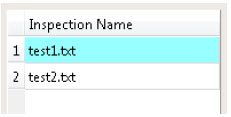

To access: View > Repeatability Analysis
You can select different analyses to perform on one or more inspection files in the Repeatability Analysis window.
Repeatability Analysis is typically done in the All folder when multiple inspections are opened.
When multiple inspections are loaded, Repeatability Analysis is not enabled in the single inspection folders. It is enabled only when the All folder is selected. However, if only a single file is loaded, then Repeatability Analysis is enabled.
There are a number of functional areas in the Repeatability Analysis window, illustrated in Figure 1.
Field |
Description |
|---|---|
Analysis Types |
Select different analysis types to perform on an inspection. The various analysis types are displayed as a tree in the Repeatability Analysis window. See “Repeatability Analysis Types” for a complete list of types. |
Inspection Names |
Specify the inspection file(s) and ID number for analysis. When you open multiple inspections, the inspections are referred to by a number or ID instead of the name. The inspection IDs start from 1. The mapping between the ID and the name is given in the mapping list in this area. Figure 2. Mapping Between
Inspection IDs and Inspection Names
 Note:
The reference inspection is highlighted in cyan. |
Computation |
Set parameters for the analysis, then compute.
|
Results Viewing Area |
View results in one of the following forms:
See “Analysis Results Viewing” for further information. To view the graphical results of all the inspections for a given analysis, click on the navigation buttons (the arrow buttons) at the bottom of the Results Viewing Area. The navigation buttons are deactivated for table view. The analysis results for all inspections are given in a single table. You can also save table results to a CSV file as well as save and print graphs. See “Save and Print Results” for further information. |